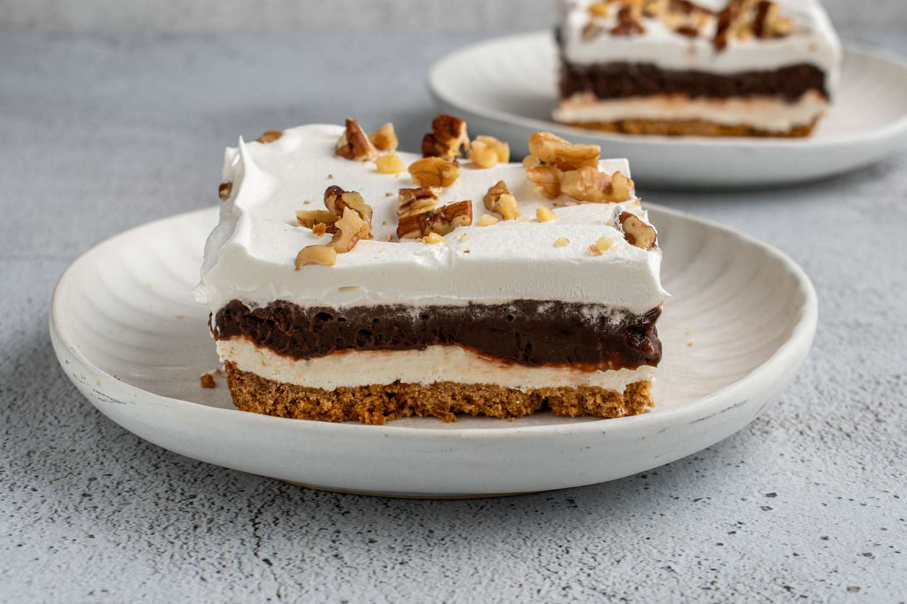

Chocolate Delight
By Chef Rjay · July 6, 2025
A rich, creamy chocolate dessert that melts in your mouth — this Chocolate Delight is perfect for chocoholics and special occasions alike.
Tags:
Dessert
Chocolate
Sweet
Category:
Desserts
Baking
Ingredients
- 1 cup crushed chocolate cookies
- 1/4 cup melted butter
- 1 package cream cheese, softened
- 1/2 cup powdered sugar
- 1 package instant chocolate pudding mix
- 2 cups cold milk
- 1 container whipped topping
- Chocolate shavings for garnish
Instructions
- Mix crushed cookies and melted butter. Press into a dish to form the crust.
- Beat cream cheese and powdered sugar until smooth. Spread over crust.
- Prepare chocolate pudding with milk. Pour over cream cheese layer.
- Top with whipped topping and chocolate shavings.
- Chill for 2 hours before serving. Enjoy!
Share:
← Back to Blog
Comments